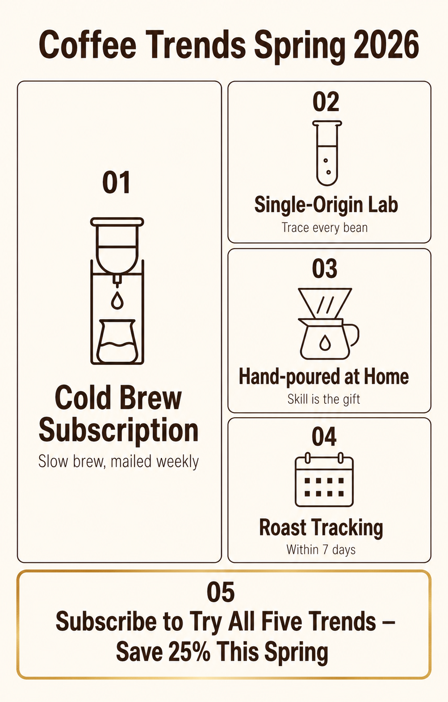

返回 CH6 模板速查站
(C1)
Bento Grid 便當格資訊圖
把多個資訊塊用「便當格 grid」排版的視覺。日本 bento 美學被 IG / Threads / 小紅書帶起後變成最熱門的資訊圖類別。一格一個 takeaway、整體有節奏感。健身教練、理財顧問、自媒體創作者最常用。
這張卡片你會學到
能判斷何時用 bento grid（與其他資訊圖差異）
能拆解 6 段並安排 4-9 格的資訊節奏
能識別 4 種踩雷（每格內容失衡／格數太多／字體大小亂／格間距不對）
(01)
適用場景
這個模板用在哪
bento grid（便當格）資訊圖。把 4-9 個資訊塊按日本便當盒美學排版——大格 + 小格交錯、不對稱但平衡、每格有獨立 takeaway、整體有閱讀節奏。IG 多圖貼文、Threads 圖文、小紅書教學圖最高頻。
典型客戶 / 交付物 自媒體創作者（健身 / 理財 / 料理）、月度接案 NT$1,500-3,000、交付：IG / Threads 教學圖 1 系列 4-6 張
四個典型用途：
- 個人 IG / Threads 教學圖（健身、理財、料理、設計教學）
- 品牌週刊 / 月刊重點整理（本月 5 大趨勢 / 重要新聞）
- 活動結束 / 課程結束 highlight（用 6 格回顧整個活動）
- Notion / Substack 訂閱主視覺（週六固定欄位）
| 對比項 | 本卡片 · C1 Bento Grid 便當格資訊圖 | 近似模板 |
|---|---|---|
| 排版 | 不對稱 grid（大格 + 小格交錯） | C2：對比兩欄；C3：垂直步驟 |
| 資訊密度 | 中（每格 1 個 takeaway） | C2：兩個比較；C3：5 步驟 |
| 讀者掃描方式 | 跳躍式（哪格先看自由） | C3：必須順序讀 |
| 適用內容 | 並列重點、不分先後 | C2：必須二元；C3：必須序列 |
| 產出比例 | 通常 1:1 或 4:5 | C3：4:5 或 9:16；C2：1:1 |
| 使用平台 | IG / Threads / 小紅書 | 其他：通用 |
一句話判斷：客戶問「IG 教學圖怎麼做」走 C1；問「兩個東西的對比」走 C2；問「分步驟教程」走 C3。C1 是個人創作者最高頻的資訊圖卡片——一張 bento grid 接案 NT$1500-3000、月固定可接 5-10 張。
(02)
模板拆解｜6 段 prompt 結構
bento grid 6 段。核心難度在「格的節奏」——9 格平均切＝無聊、4 大格＝太空、要有大小交錯：
| 段 | 段落 | 必問還是可預設 | 填什麼 |
|---|---|---|---|
| 1 | topic 主題 | 必問 | 整張圖的主題（≤ 8 字）+ 標題位置（左上 / 中央橫幅） |
| 2 | grid system | 必問 | 格數（4 / 6 / 9）+ 大小比例（1 大 + 4 小、2 大 + 4 小、3 等大 + 6 小⋯⋯） |
| 3 | block contents | 必問 | 每格的 takeaway（≤ 8 字標題 + 1-2 句說明） |
| 4 | visual elements | 選用 | 每格的 icon / 數字 / 小插畫；圖文比例（純文字 / 文字 + icon / 文字 + 大數字） |
| 5 | color system | 必問 | 底色（米白 / 灰 / 暖色）+ 強調色（≤ 2 色）；每格不要不同色（會散） |
| 6 | constraints 限制 | 固定寫死 | 禁忌：每格內容字數不平衡、格間距不對（要 2-4% 畫面寬）、字體超過 2 種、每格用不同色 |
記憶口訣：主題 → 格 → 內容 → 視覺 → 色 → 禁。新手最常 9 格平均切——bento 的精髓是「不對稱平衡」。明確寫「one large block at top-left, smaller blocks around it」「2:1 size ratio between main and sub blocks」。
(03)
示範圖｜可複製、可重現
下面這張是「2026 春季 5 大咖啡趨勢」bento grid。1 大格（趨勢 1）+ 4 小格（趨勢 2-5）、米白底深棕字、每格有 icon + 短標題 + 說明。適合 IG 教學貼文。

完整 prompt · 2026 春季 5 大咖啡趨勢 bento grid
請生成一張 bento grid 資訊圖（日本便當格美學）： 【整體】4:5 直立比例、適合 IG / Threads 貼文。 【主題】「Coffee Trends Spring 2026」（畫面頂部標題、無襯線粗體、深棕、置中） 【grid 系統】2 大 + 3 小不對稱排版： - 左上大格（占畫面左側 1/2） - 右上 + 右中 + 右下 3 個小格（每格約大格 1/3 高） - 底部橫向 1 個中格（占畫面寬度 100%） 【格內容】每格含：icon（極簡黑線繪、≤ 3 條線）+ 標題（無襯線粗體）+ 1-2 行說明（無襯線細體）： - 大格 #01：「Cold Brew Subscription」+ 冰滴壺 icon + 「Slow brew, mailed weekly」 - 小格 #02：「Single-Origin Lab」+ 試管 icon + 「Trace every bean」 - 小格 #03：「Hand-poured at Home」+ 濾杯 icon + 「Skill is the gift」 - 小格 #04：「Roast Tracking」+ 日曆 icon + "Within 7 days" - 底部中格 #05：「Subscribe to Try All Five Trends — Save 25% This Spring」（CTA banner） 【色板】嚴格 3 色：米白底 + 深棕字（標題與 icon）+ 燙金 accent（CTA banner 邊框）。每格用同一個底色（米白）、不要每格不同色。 【字體】2 種：標題用無襯線粗體、說明用無襯線細體。全英文。 【格間距】格與格之間留 3% 畫面寬度的白色 gutter。 【限制】嚴禁人物、嚴禁每格內容字數不平衡（每格說明都要 1-2 行）、嚴禁字體超過 2 種、嚴禁每格用不同色、嚴禁中文字、嚴禁 icon 過於繁複（≤ 3 條線）。
讀圖時看這 4 個點：(1) 大格 vs 小格的比例對不對（2:1 size ratio）？(2) 每格內容字數有沒有平衡（不要 1 格塞 30 字另格塞 5 字）？(3) icon 是不是「極簡 3 線」級別？(4) 整體色板是不是 ≤ 3 色？
(04)
改成你的場景｜踩雷與失敗案例
把 prompt 拿來、改 3 個替換槽就變你的版本：
| 替換槽 | 你的版本 |
|---|---|
| ⓐ 主題 + 格數 = ? | 例：5 大趨勢（1 大 + 4 小）／3 個重點（3 等大）／6 個 tips（2 大 + 4 小） |
| ⓑ 每格 takeaway = ?（≤ 8 字標題） | 例：Cold Brew / Single-Origin Lab / Hand-poured |
| ⓒ 色板 + icon 風格 = ? | 例：米白＋深棕＋極簡線稿（文青）／純白＋黑＋幾何 icon（科技） |
最常見的 4 種踩雷：
- 9 格平均切、無節奏感 客戶想塞 9 個重點、設計師 3×3 平均切——結果像 PPT 表格不像 bento。解法：明確寫「asymmetric grid: 1 large + N smaller blocks」「visual hierarchy through size, not just content」。
- 每格內容字數不平衡 1 格塞 50 字、另格塞 5 字——視覺重量打架。解法：明確寫「each block: title ≤ 8 words + description 1-2 lines」、超過就分成兩格。
- icon 過於繁複 AI 給你寫實插畫 icon、整張圖變兒童繪本。解法：明確寫「minimalist line icon, ≤ 3 strokes per icon, monochrome」。
- 中文 bento grid 文字一律後製 imagegen 中文字體限制。C1 的最佳策略：英文版用 imagegen 直出（如示範圖）、中文版（「冷萃訂閱」「單品實驗室」）走 後製字體疊圖工作流附錄 在 Figma 用「金萱半糖粗 + 思源黑體細」疊上。
實戰提醒：C1 bento grid 很多客戶會做整個系列（每月一張），用 Figma 建 master component、每月只換文字內容、icon 與排版自動套用，效率最高、品質最穩。
交付提醒 本卡片的 imagegen 示範圖不是可直接給客戶的最終交付品。中文商業案一律先用 imagegen 出構圖（含英文 placeholder）、再走 後製字體疊圖工作流 在 Figma／Canva 疊上中文、最後校稿確認才交付給客戶。
本卡片改寫自 ConardLi／garden-skills 之
bento-grid-infographic.md 模板（MIT License、2026），已對中文進行台灣用語在地化、加入本地接案情境與失敗案例。